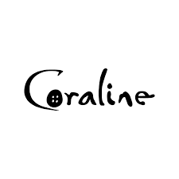

<!DOCTYPE html>
<html lang="en">
<head>
    <meta charset="UTF-8">
    <meta name="viewport" content="width=device-width, initial-scale=1.0">
    <title>Coraline e o Mundo Secreto</title>
    <link rel="styesheet" href="index.css"

</head>
<body>
    <nav>
        <ul>
           
        </ul>
    </nav>
</body>
</html>

<div class="center">
    </img>
</div>
<h1>Coraline e o Mundo Secreto</h1>
<h2>A história de Coraline</h2>
</header>

<main>
    <section>
        <h3>Sinopse</h3>
        <p>
            Coraline Jones é uma menina curiosa e determinada
            que se muda com seus pais para uma antiga casa no campo.
            Em seu novo lar, ela encontra uma porta secreta que a leva
            a um mundo paralelo, muito parecido com o seu
            muito mais mágico e sedutor. Nesse outro mundo,
            tudo parece ser melhor — os "Outros" pais da Coraline,
            com botões no lugar dos olhos, são mais atenciosos e
            carinhosos, e as pessoas parecem mais divertidas e
            interessante.
            No entanto, logo Coraline percebe que o outro mundo
            esconde perigos terríveis. A Outra Mãe (uma
            criatura assustadora) tenta mantê-la lá para sempre,
            oferecendo-lhe um destino sombrio. Coraline
            precisará usar sua inteligência e coragem para enfrentar
            os desafios e salvar seus pais, sua própria vida e o mundo real.
        </p>
    </section>
    <section>
        <h3>Personagens</h3>
        <p>
            Coraline Jones: 
            A protagonista da história, uma garota curiosa e corajosa de 11 anos. 
            Ela se muda com seus pais para uma nova casa e acaba descobrindo um mundo paralelo, 
            onde tudo parece melhor, mas esconde perigos. Coraline é inteligente, independente e 
            tem uma personalidade forte, o que a torna capaz de enfrentar 
            grandes desafios para salvar seus pais e a si mesma. <br />
            <br />
            A Outra Mãe (Beldame): A antagonista da história. Ela vive no "Outro Mundo", 
            um lugar paralelo onde tudo é uma versão distorcida da realidade. 
            Ela inicialmente parece ser uma versão idealizada da mãe de Coraline, 
            com características que a atraem, como o carinho e a atenção excessiva, 
            mas logo revela seu lado sombrio e malévolo. A Outra Mãe tem botões no 
            lugar dos olhos e usa sua habilidade de manipulação para tentar manter 
            Coraline no Outro Mundo.<br />
            <br />
            O Outro Pai: Uma versão do pai de Coraline no Outro Mundo. 
            Ele também parece ser mais atencioso e amável do que o pai 
            real de Coraline, mas sua natureza é manipuladora, servindo 
            aos interesses da Outra Mãe. Ele não possui uma grande 
            personalidade própria, pois está sob o controle da Outra Mãe.<br />
            <br />
            O Gato: Um personagem misterioso e enigmático que aparece 
            tanto no mundo real quanto no Outro Mundo. Ele pode andar 
            e falar, mas não tem um lado fixo em qualquer dos mundos. 
            O Gato é aliado de Coraline e a ajuda em sua jornada ao 
            revelar detalhes importantes sobre o Outro Mundo. Ele é 
            astuto e, em muitos momentos, representa a lógica e a perspicácia.<br />
            <br />
            Os Pais de Coraline: Eles são figuras distantes e ocupadas no mundo real. 
            Sua relação com Coraline é fria e negligente, o que faz com que ela se sinta 
            solitária e busque aventura no Outro Mundo. No entanto, seus pais são 
            sequestrados pela Outra Mãe, e Coraline precisa resgatá-los.<br />        
        </p>
    </section>
    <section>
        <h3>Curiosidades</h3>
        <p>
            O filme foi baseado no livro de Neil Gaiman, mesmo autor da famosa história “Sandman”.<br />
            <br />
            A obra é considerada a primeira animação em stop-motion para o formato 3D. Inclusive, até hoje, 
            foi o desenho mais longo já produzido utilizando essa técnica.<br />
            <br />
            O filme teve uma indicação para melhor animação no Oscar de 2010.<br />
            <br />
            A animação levou cerca de quatro anos para ficar pronta. Só o trabalho de fotografia levou 18 meses.<br />
            <br />
            Foram necessárias 10 pessoas para fazer uma única boneca da Coraline para as gravações e o processo demorou de 3 a 4 meses.<br />
            <br />
            No total, foram feitas 15.000 expressões faciais à mão. Só para a personagem Coraline, foram feitas 6.300.<br />
        </p>
    </section>
    
</html>